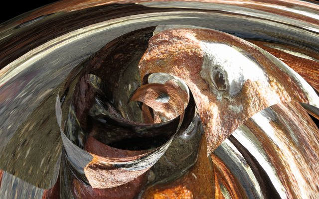
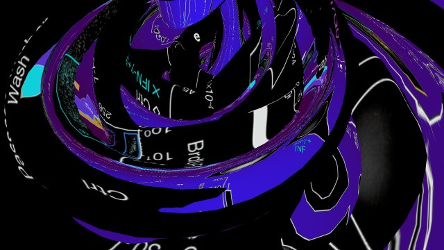
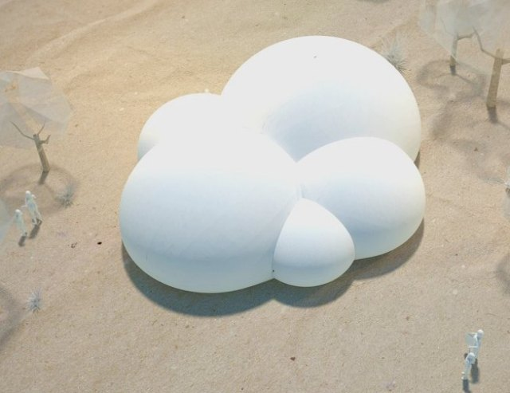
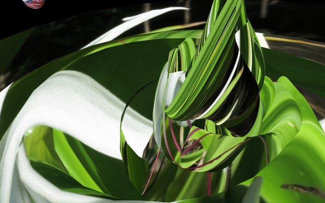
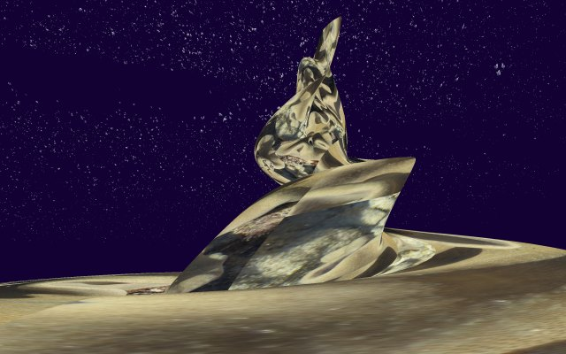
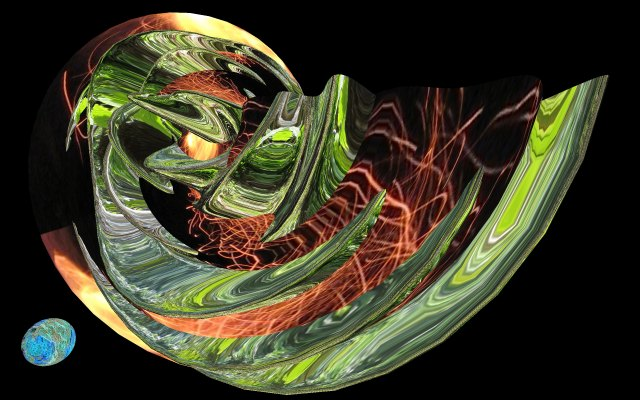

When I learnt that my ex-partner and mother of my two older children was terminally ill with cancer and her doctor had told her there was no treatment available my reaction was to read about recent research in this field. The most hopeful is the work of the team lead by Prof. Dr. Martin Röcken from the Department of Dermatology of the University Medical Center Tübingen. Science Daily says: They have shown for the first time that the immune system is able to drive tumours and tumour cells into a form of permanent dormancy. The resulting growth arrest allows tumour control in the absence of cancer cell destruction. This permanent dormancy, scientifically known as senescence, may persist for the whole life of the organism. Thus, immunotherapy can prevent tumour development without destroying the cells. These experiments have been done with mice and human cells, trials on patients are expected within a year or two. |
 |
|  | Science Daily cites references and I selected the most recent by Röcken and his co-workers, published in Nature, and began a process to convert parts of this into virtual kinetic sculptures. The sculptures move in real time and diagrams from the article are used to texture their surfaces. The computer world can be explored by the viewer and the movements of the virtual camera saved. I record my journeys of exploration into this digital realm in files which are subsequently replayed as high definition video entirely surrounding and immersing the viewer. |
I have proposed my virtual world be projected in the round upon Sphaerae, an inflatable structure to appear at Ars Electronica Biolab 2013, part of the festival concerned with synthetic biology organised by Studiolab and partner organisations. The Sphaerae is large enough for many people to go inside: up to sixty people can enter this womb like space at one time and be surrounded on all sides by projections. A program of artists will be selected to show their work. I am considering making this immersive environment interactive so that visitors can make their own explorations within my world; this depends on further work needed to make the interface intuitive and easy for the first time user. |
 |
|  | I believe we must work in collaboration with nature. I say this because I so love nature, but also because it is a practical fact. The experimental cancer treatment is an exemplar of this combination, finding new synthetic ways to enhance our natural immune system. Synthetic biology is at a sensitive time. If it finds ways to help people and the natural environment it will be trusted. To illustrate this idea of symbiosis of artificial and natural, I fuse the art forms I have created with the experimental treatment with other new work, not quite a photo journal or travel diary but specifically based on my recent travel experiences using images from a number of places I visited, including coastline in Thailand famous for its rock formations, Pranang Peninsula, a unique climbing and base jumping location. |
I start with simple nature pictures, a sea shell crawling across a bright earth red rock, a glorious white lily with glistening petals and leaves, a flickering campfire flame, a leaf fallen in the forest and decaying with perfect beauty, a glimpse of coral seen while paddling on a beach of impossible perfection, strange gargoyle like rock formations that looked they belonged deep in a cave and had no place being out in the bright burning sunlight, overhanging cliffs sprouting vast precariously hanging stalactites. All of this I transform into a never ending stream, mesmerising, hypnotic, gently massaging the mind. |
 |
|  | I invite you to step with me through the threshold into this other world, beyond the doorway is something much deeper. And when you go there, this becomes personal. |
Download video showing short excerpt of cgi under development. Refererences: |
|